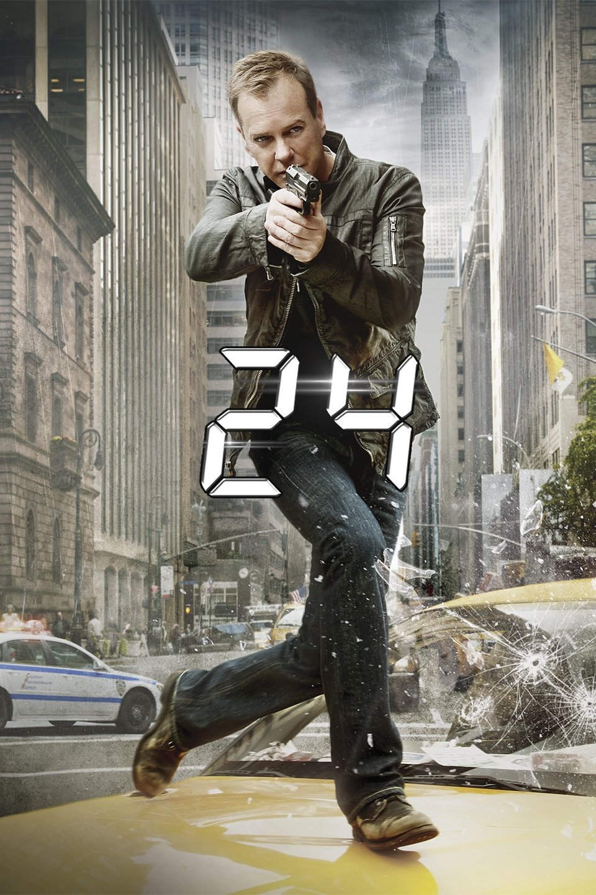

24 (Aired:2001-2010)
Rating: 8/10
Age Restriction: TV-14
Jack Bauer, Director of the Anti Terrorist Group of Los Angeles, fights the clock to help end terrorist plots and save his nation from an explosive diaster.
Creators: Robert Cochran, Joel Surnow
Cast
Kiefer Sutherland as .... Jack Bauer
Mary Lynn Rajskub as .... Chloe O'Brian
Carlos Bernard as .... Tony Almeida
Dennis Haysbert as .... President David Palmer
Elisha Cuthbert as .... Kim Bauer
James Morrison as .... Bill Buchanan
Reiko Aylesworth as .... Michelle Dessler